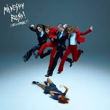
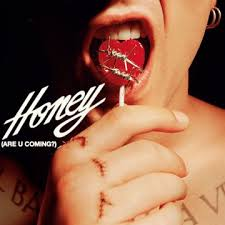
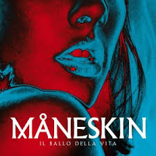
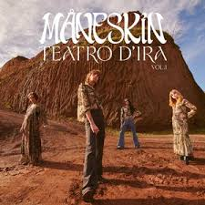

Álbumes de Estudio
- Rush! (2023): Incluye éxitos como "Gossip" y "The Loneliest".
- Teatro d'ira: Vol. I (2021): El álbum que contiene "Zitti e buoni".
- Il ballo della vita (2018): Su debut oficial con "Torna a casa".
- Chosen (2017): Su primer EP tras X Factor.
Rush

Honey

ll Ballo Della Vita

Chosen
Teatro D'ira: vol 1
